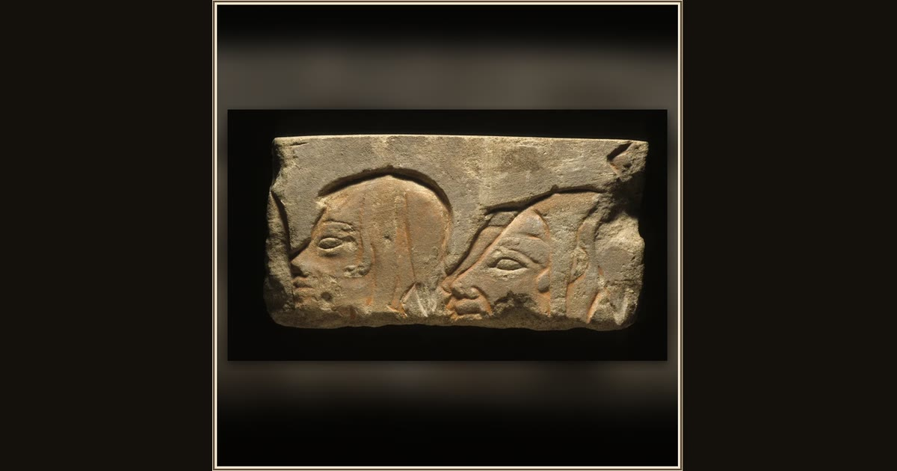

Relief block with the heads of three Libyans
New Kingdom, Amarna Period Dynasty 18 · ca. 1347–1328 BCE · met
An Amarna-period sandstone relief shows Libyan heads in profile; Herodotus begins his survey of Libyan peoples with the Adyrmachidae, who lived nearest Egypt (4.168.1) Explore its place in Herodotus's Histories, Book IV, chapter 475.